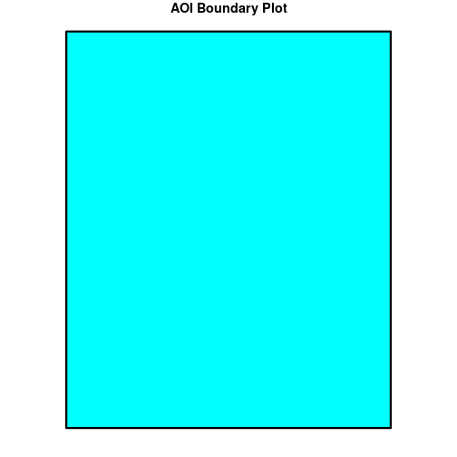
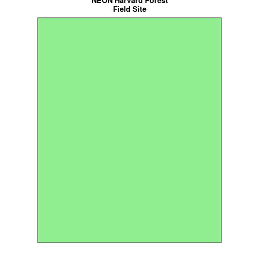
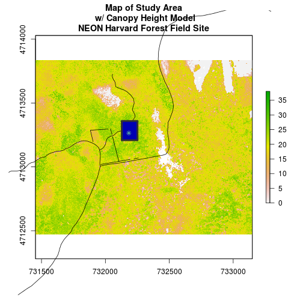

Open and Plot Shapefiles in R
Authors
Joseph Stachelek, Leah A. Wasser, Megan A. Jones
Overview
Teaching: 10 min
Exercises: 0 minQuestions
Getting started with point, line and polygon vector data.
Objectives
Know the difference between point, line, and polygon vector elements.
Understand the differences between opening point, line and polygon shapefiles in
R.Understand the components of a spatial object in
R.
Things You’ll Need To Complete This Tutorial
R Skill Level: Introduction - you are just getting started with spatial data in
R, but have some of the otherRbasics down.You will need the most current version of
Rand, preferably,RStudioloaded on your computer to complete this tutorial.Install R Packages
- raster:
install.packages("raster")- sf:
install.packages("sf")More on Packages in R - Adapted from Software Carpentry.
Download Data
In this tutorial, we will open and plot point, line and polygon vector data
stored in shapefile format in R.
About Vector Data
Vector data are composed of discrete geometric locations (x, y values) known as vertices that define the “shape” of the spatial object. The organization of the vertices, determines the type of vector that we are working with: point, line or polygon.

- Points: Each individual point is defined by a single x, y coordinate. There can be many points in a vector point file. Examples of point data include: sampling locations, the location of individual trees or the location of plots.
- Lines: Lines are composed of many (at least 2) vertices, or points, that
are connected. For instance, a road or a stream may be represented by a line. This
line is composed of a series of segments, each “bend” in the road or stream
represents a vertex that has defined
x, ylocation. - Polygons: A polygon consists of 3 or more vertices that are connected and “closed”. Thus the outlines of plot boundaries, lakes, oceans, and states or countries are often represented by polygons. Occasionally, a polygon can have a hole in the middle of it (like a doughnut), this is something to be aware of but not an issue we will deal with in this tutorial.
Data Tip
Sometimes, boundary layers such as states and countries, are stored as lines rather than polygons. However, these boundaries, when represented as a line, will not create a closed object with a defined “area” that can be “filled”.
Shapefiles: Points, Lines, and Polygons
Geospatial data in vector format are often stored in a shapefile format.
Because the structure of points, lines, and polygons are different, each
individual shapefile can only contain one vector type (all points, all lines
or all polygons). You will not find a mixture of point, line and polygon
objects in a single shapefile.
Objects stored in a shapefile often have a set of associated attributes that
describe the data. For example, a line shapefile that contains the locations of
streams, might contain the associated stream name, stream “order” and other
information about each stream line object.
- More about shapefiles can found on Wikipedia.
Import Shapefiles
We will use the sf package to work with vector data in R. Notice that the
rgdal package automatically loads when sf is loaded. We will also load the
raster package so we can explore raster and vector spatial metadata using similar commands.
# load required libraries
# for vector work
library(sf)
Linking to GEOS 3.5.0, GDAL 2.2.2, proj.4 4.8.0
# for metadata/attributes- vectors or rasters
library(raster)
Loading required package: sp
# set working directory to the directory location on your computer where
# you downloaded and unzipped the data files for the tutorial
# setwd("pathToDirHere")
The shapefiles that we will import are:
- A polygon shapefile representing our field site boundary,
- A line shapefile representing roads, and
- A point shapefile representing the location of the Fisher flux tower located at the NEON Harvard Forest field site.
The first shapefile that we will open contains the boundary of our study area
(or our Area Of Interest or AOI, hence the name aoiBoundary). To import
shapefiles we use the sf function st_read.
st_read() requires the file path to the shapefile.
Let’s import our AOI.
# Import a polygon shapefile
aoi_boundary_HARV <- st_read(
"data/NEON-DS-Site-Layout-Files/HARV/HarClip_UTMZ18.shp")
Reading layer `HarClip_UTMZ18' from data source `/home/travis/build/datacarpentry/r-raster-vector-geospatial/_episodes_rmd/data/NEON-DS-Site-Layout-Files/HARV/HarClip_UTMZ18.shp' using driver `ESRI Shapefile'
Simple feature collection with 1 feature and 1 field
geometry type: POLYGON
dimension: XY
bbox: xmin: 732128 ymin: 4713209 xmax: 732251.1 ymax: 4713359
epsg (SRID): 32618
proj4string: +proj=utm +zone=18 +datum=WGS84 +units=m +no_defs
Shapefile Metadata & Attributes
When we import the HarClip_UTMZ18 shapefile layer into R (as our
aoi_boundary_HARV object), the st_read() function automatically stores
information about the data. We are particularly interested in the geospatial
metadata, describing the format, CRS, extent, and other components of
the vector data, and the attributes which describe properties associated
with each individual vector object.
Data Tip
The Shapefile Metadata & Attributes in R tutorial provides more information on both metadata and attributes and using attributes to subset and plot data.
Spatial Metadata
Key metadata for all shapefiles include:
- Object Type: the class of the imported object.
- Coordinate Reference System (CRS): the projection of the data.
- Extent: the spatial extent (geographic area that the shapefile covers) of the shapefile. Note that the spatial extent for a shapefile represents the extent for ALL spatial objects in the shapefile.
We can view shapefile metadata using the st_geometry_type, st_crs and st_bbox methods:
# view just the geometry type for the shapefile
st_geometry_type(aoi_boundary_HARV)
[1] POLYGON
18 Levels: GEOMETRY POINT LINESTRING POLYGON ... TRIANGLE
# view just the crs for the shapefile
st_crs(aoi_boundary_HARV)
Coordinate Reference System:
EPSG: 32618
proj4string: "+proj=utm +zone=18 +datum=WGS84 +units=m +no_defs"
# view just the extent for the shapefile
st_bbox(aoi_boundary_HARV)
xmin ymin xmax ymax
732128.0 4713208.7 732251.1 4713359.2
# view all metadata at same time
aoi_boundary_HARV
Simple feature collection with 1 feature and 1 field
geometry type: POLYGON
dimension: XY
bbox: xmin: 732128 ymin: 4713209 xmax: 732251.1 ymax: 4713359
epsg (SRID): 32618
proj4string: +proj=utm +zone=18 +datum=WGS84 +units=m +no_defs
id geometry
1 1 POLYGON ((732128 4713359, 7...
Our aoi_boundary_HARV is an sf polygon object,
in the CRS UTM zone 18N. The CRS is critical to interpreting the object
extent values as it specifies units.

Spatial Data Attributes
Each object in a shapefile has one or more attributes associated with it. Shapefile attributes are similar to fields or columns in a spreadsheet. Each row in the spreadsheet has a set of columns associated with it that describe the row element. In the case of a shapefile, each row represents a spatial object - for example, a road, represented as a line in a line shapefile, will have one “row” of attributes associated with it. These attributes can include different types of information that describe objects stored within a shapefile. Thus, our road, may have a name, length, number of lanes, speed limit, type of road and other attributes stored with it.

We can view the attributes of an sf object by printing it to the screen. The geometry of the object can be dropped by turning the object into a data.frame.
aoi_boundary_HARV
Simple feature collection with 1 feature and 1 field
geometry type: POLYGON
dimension: XY
bbox: xmin: 732128 ymin: 4713209 xmax: 732251.1 ymax: 4713359
epsg (SRID): 32618
proj4string: +proj=utm +zone=18 +datum=WGS84 +units=m +no_defs
id geometry
1 1 POLYGON ((732128 4713359, 7...
# alternate way to view attributes
data.frame(aoi_boundary_HARV)
id geometry
1 1 POLYGON ((732128 4713359, 7...
In this case, our polygon object only has one attribute: id.
Metadata & Attribute Summary
We can view a metadata & attribute summary of each shapefile by entering
the name of the R object in the console. Note that the metadata output
includes the geometry type, the number of features, the extent, and the
coordinate reference system (crs) of the R object. The output of summary() shows a preview of the R object attributes.
# view a summary of metadata & attributes associated with the spatial object
summary(aoi_boundary_HARV)
id geometry
Min. :1 POLYGON :1
1st Qu.:1 epsg:32618 :0
Median :1 +proj=utm ...:0
Mean :1
3rd Qu.:1
Max. :1
Plot a Shapefile
Next, let’s visualize the data in our sf object using
plot().
# create a plot of the shapefile
# 'lwd' sets the line width
# 'col' sets internal color
# 'border' sets line color
plot(aoi_boundary_HARV, col = "cyan1", border = "black", lwd = 3,
main = "AOI Boundary Plot")

Challenge: Import Line and Point Shapefiles
Using the steps above, import the HARV_roads and HARVtower_UTM18N layers into
R. Call the Harv_roads objectlines_HARVand the HARVtower_UTM18Npoint_HARV.Answer the following questions:
What type of
Rspatial object is created when you import each layer?What is the
CRSandextentfor each object?Do the files contain, points, lines or polygons?
How many spatial objects are in each file?
Answers
# import line shapefile lines_HARV <- st_read("data/NEON-DS-Site-Layout-Files/HARV/HARV_roads.shp")Reading layer `HARV_roads' from data source `/home/travis/build/datacarpentry/r-raster-vector-geospatial/_episodes_rmd/data/NEON-DS-Site-Layout-Files/HARV/HARV_roads.shp' using driver `ESRI Shapefile' Simple feature collection with 13 features and 15 fields geometry type: MULTILINESTRING dimension: XY bbox: xmin: 730741.2 ymin: 4711942 xmax: 733295.5 ymax: 4714260 epsg (SRID): 32618 proj4string: +proj=utm +zone=18 +datum=WGS84 +units=m +no_defs# import point shapefile point_HARV <- st_read("data/NEON-DS-Site-Layout-Files/HARV/HARVtower_UTM18N.shp")Reading layer `HARVtower_UTM18N' from data source `/home/travis/build/datacarpentry/r-raster-vector-geospatial/_episodes_rmd/data/NEON-DS-Site-Layout-Files/HARV/HARVtower_UTM18N.shp' using driver `ESRI Shapefile' Simple feature collection with 1 feature and 14 fields geometry type: POINT dimension: XY bbox: xmin: 732183.2 ymin: 4713265 xmax: 732183.2 ymax: 4713265 epsg (SRID): 32618 proj4string: +proj=utm +zone=18 +datum=WGS84 +units=m +no_defs# 1 class(lines_HARV)[1] "sf" "data.frame"class(point_HARV)[1] "sf" "data.frame"# 2 st_crs(lines_HARV)Coordinate Reference System: EPSG: 32618 proj4string: "+proj=utm +zone=18 +datum=WGS84 +units=m +no_defs"st_bbox(lines_HARV)xmin ymin xmax ymax 730741.2 4711942.0 733295.5 4714260.0st_crs(point_HARV)Coordinate Reference System: EPSG: 32618 proj4string: "+proj=utm +zone=18 +datum=WGS84 +units=m +no_defs"st_bbox(point_HARV)xmin ymin xmax ymax 732183.2 4713265.0 732183.2 4713265.0# 3 #lines_HARV contains only lines and point_HARV contains only 1 point # 4 -> numerous ways to find this; lines_HARV=13, nrow(lines_HARV) #easiest, but not previously taught[1] 13lines_HARV #look at 'features'Simple feature collection with 13 features and 15 fields geometry type: MULTILINESTRING dimension: XY bbox: xmin: 730741.2 ymin: 4711942 xmax: 733295.5 ymax: 4714260 epsg (SRID): 32618 proj4string: +proj=utm +zone=18 +datum=WGS84 +units=m +no_defs First 10 features: OBJECTID_1 OBJECTID TYPE NOTES MISCNOTES RULEID 1 14 48 woods road Locust Opening Rd <NA> 5 2 40 91 footpath <NA> <NA> 6 3 41 106 footpath <NA> <NA> 6 4 211 279 stone wall <NA> <NA> 1 5 212 280 stone wall <NA> <NA> 1 6 213 281 stone wall <NA> <NA> 1 7 214 282 stone wall <NA> <NA> 1 8 215 283 stone wall <NA> <NA> 1 9 216 284 stone wall <NA> <NA> 1 10 553 674 boardwalk <NA> <NA> 2 MAPLABEL SHAPE_LENG LABEL BIKEHORSE RESVEHICLE 1 Locust Opening Rd 1297.35706 Locust Opening Rd Y R1 2 <NA> 146.29984 <NA> Y R1 3 <NA> 676.71804 <NA> Y R2 4 <NA> 231.78957 <NA> <NA> <NA> 5 <NA> 45.50864 <NA> <NA> <NA> 6 <NA> 198.39043 <NA> <NA> <NA> 7 <NA> 143.19240 <NA> <NA> <NA> 8 <NA> 90.33118 <NA> <NA> <NA> 9 <NA> 35.88146 <NA> <NA> <NA> 10 <NA> 67.43464 <NA> N R3 RECMAP Shape_Le_1 ResVehic_1 1 Y 1297.10617 R1 - All Research Vehicles Allowed 2 Y 146.29983 R1 - All Research Vehicles Allowed 3 Y 676.71807 R2 - 4WD/High Clearance Vehicles Only 4 <NA> 231.78962 <NA> 5 <NA> 45.50859 <NA> 6 <NA> 198.39041 <NA> 7 <NA> 143.19241 <NA> 8 <NA> 90.33114 <NA> 9 <NA> 35.88152 <NA> 10 N 67.43466 R3 - No Vehicles Allowed BicyclesHo geometry 1 Bicycles and Horses Allowed MULTILINESTRING ((730819.2 ... 2 Bicycles and Horses Allowed MULTILINESTRING ((732040.2 ... 3 Bicycles and Horses Allowed MULTILINESTRING ((732057 47... 4 <NA> MULTILINESTRING ((731903.6 ... 5 <NA> MULTILINESTRING ((732039.1 ... 6 <NA> MULTILINESTRING ((732056.2 ... 7 <NA> MULTILINESTRING ((731964 47... 8 <NA> MULTILINESTRING ((732105.2 ... 9 <NA> MULTILINESTRING ((732222.9 ... 10 DO NOT SHOW ON REC MAP MULTILINESTRING ((732153.8 ...
Plot Multiple Shapefiles
The plot() function can be used for basic plotting of spatial objects.
We use the add = TRUE argument to overlay shapefiles on top of each other, as
we would when creating a map in a typical GIS application like QGIS.
We can use main = "" to give our plot a title. If we want the title to span two
lines, we use \n where the line should break.
# Plot multiple shapefiles
plot(aoi_boundary_HARV, col = "lightgreen",
main = "NEON Harvard Forest\nField Site")
plot(lines_HARV, add = TRUE)
Warning in plot.sf(lines_HARV, add = TRUE): ignoring all but the first
attribute
# use the pch element to adjust the symbology of the points
plot(point_HARV, add = TRUE, pch = 19, col = "purple")
Warning in plot.sf(point_HARV, add = TRUE, pch = 19, col = "purple"):
ignoring all but the first attribute

Data Tip
The pch argument specifies the point shape. A list of valid point shapes can be found by viewing this graphic
Challenge: Plot Raster & Vector Data Together
You can plot vector data layered on top of raster data using the
add = TRUEplot attribute. Create a plot that uses the NEON AOP Canopy Height ModelNEON_RemoteSensing/HARV/CHM/HARV_chmCrop.tifas a base layer. On top of the CHM, please add:
- The study site AOI.
- Roads.
- The tower location.
Be sure to give your plot a meaningful title.
For assistance consider using the Shapefile Metadata & Attributes in R, the Plot Raster Data in R tutorials.
Answers
# import CHM chm_HARV <- raster("data/NEON-DS-Airborne-Remote-Sensing/HARV/CHM/HARV_chmCrop.tif") plot(chm_HARV, main = "Map of Study Area\n w/ Canopy Height Model\nNEON Harvard Forest Field Site") plot(lines_HARV, add = TRUE, col = "black")Warning in plot.sf(lines_HARV, add = TRUE, col = "black"): ignoring all but the first attributeplot(aoi_boundary_HARV, border="grey20", add = TRUE, lwd = 4) plot(point_HARV, pch=8, add = TRUE)Warning in plot.sf(point_HARV, pch = 8, add = TRUE): ignoring all but the first attribute
Additional Resources: Plot Parameter Options
For more on parameter options in the base R plot() function, check out these
resources:
Key Points